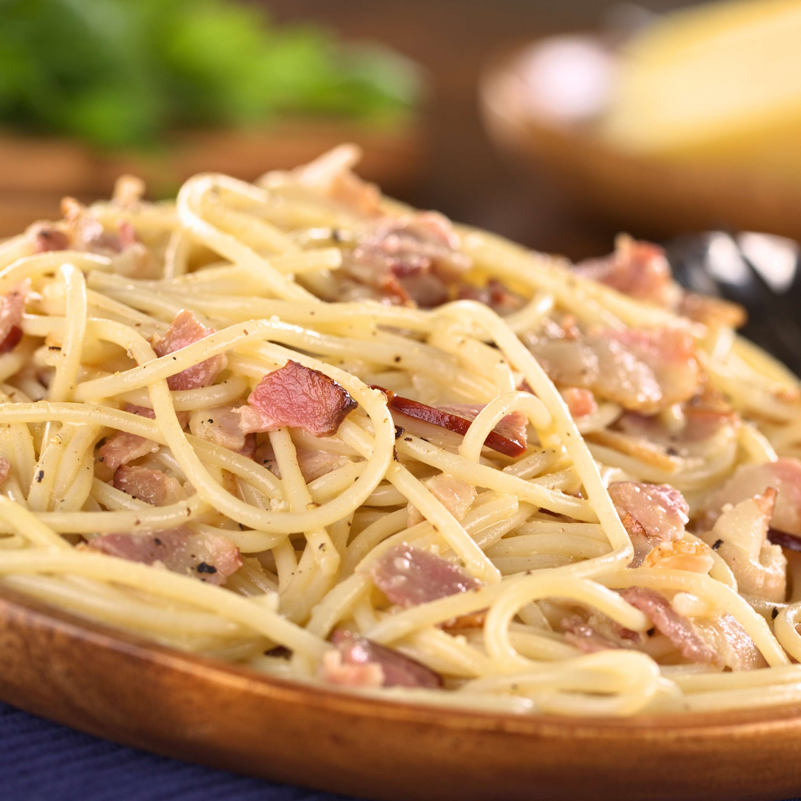

Carbonara

Description
Carbonara is an Italian pasta dish from Rome made with eggs, hard cheese, cured pork, and black pepper. The dish arrived at its modern form, with its current name, in the middle of the 20th century.
Ingredients
- Eggs
- Hard cheese
- Cured pork
- Black pepper
Steps to prepare
- Put a large pot of salted water on to boil.
- While the water is boiling, heat some olive oil in a pan and slowly cook the cured pork in it, until crispy
- In a small bowl, beat the eggas and mix in about half the cheese.
- Once the water has boiled, at the pasta.
- When the pasta is al dente, combine all the ingredients in the pan.